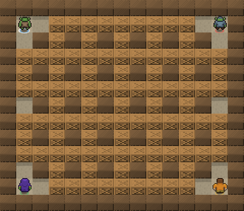
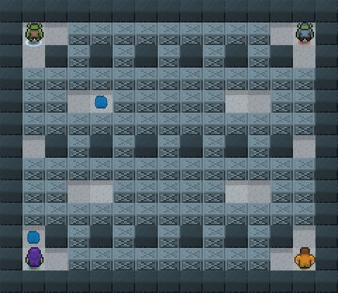
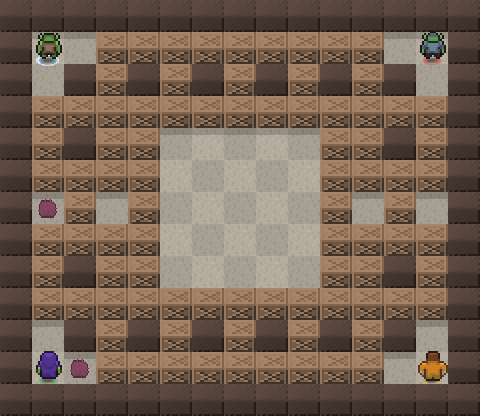
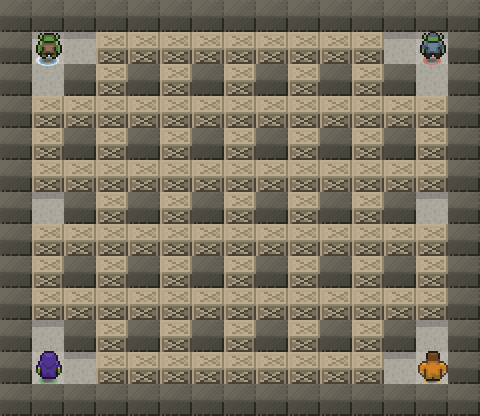
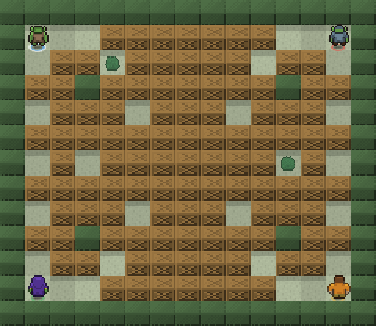
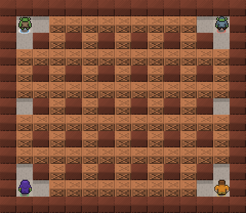
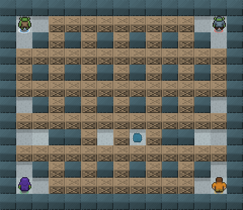
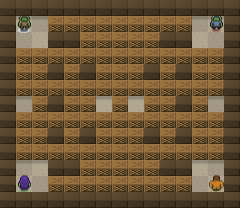
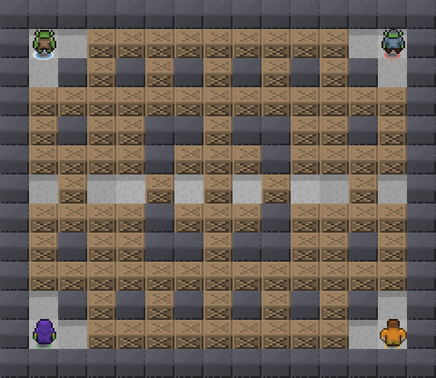
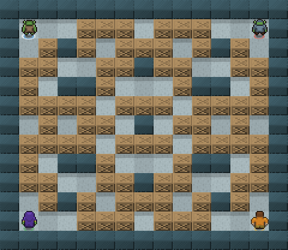

Gamla Stan (Old Town)
Gamla Stan
Medieval alleys around Stortorget: a dense maze of narrow lanes where every corner hides a blast.
floorwallcrateflameaccent
2.5D art preview
Every map shares one 16px pixel-art atlas, scaled 4×: neutral grayscale tiles are tinted at runtime with each district’s theme colors, so floors, walls, crates and greenery change identity with zero extra sprites. Shown at match start, with the first four spawn points taken.

Gamla Stan (Old Town)
Medieval alleys around Stortorget: a dense maze of narrow lanes where every corner hides a blast.

Norrmalm (Metro hub)
Stockholm's central metro station: long tunnel corridors and platforms where blasts travel far.

Södermalm
The open square at Medborgarplatsen: a wide central plaza with no cover, ringed by cluttered side streets.

Östermalm
Stately boulevards laid out in a perfect grid: the classic arena, elegant and unforgiving.

Djurgården (Royal park island)
Open parkland between the museums: few walls to hide behind, tree lines of crates everywhere.

Vasastan
Dense turn-of-the-century housing blocks: tight courtyards packed with cover and short escape routes.

Kungsholmen
The Norr Mälarstrand waterfront: a long quay wall splits the island from the shore promenade.

Djurgården (Open-air museum)
The world's oldest open-air museum: fenced enclosures and farmsteads turn the arena into paddocks.

Södermalm (The lock)
The eternally-under-construction interchange: a concrete ring in the middle funnels everyone together.

Stockholm Archipelago
Rocky islets scattered across open water: wall clusters form islands, crates bridge the channels.